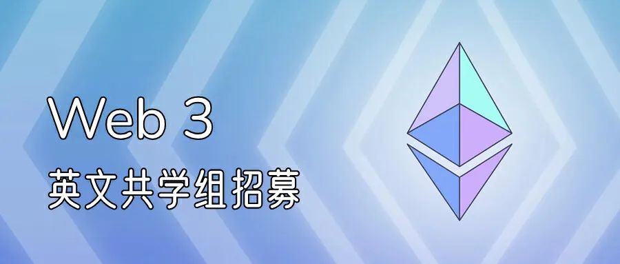
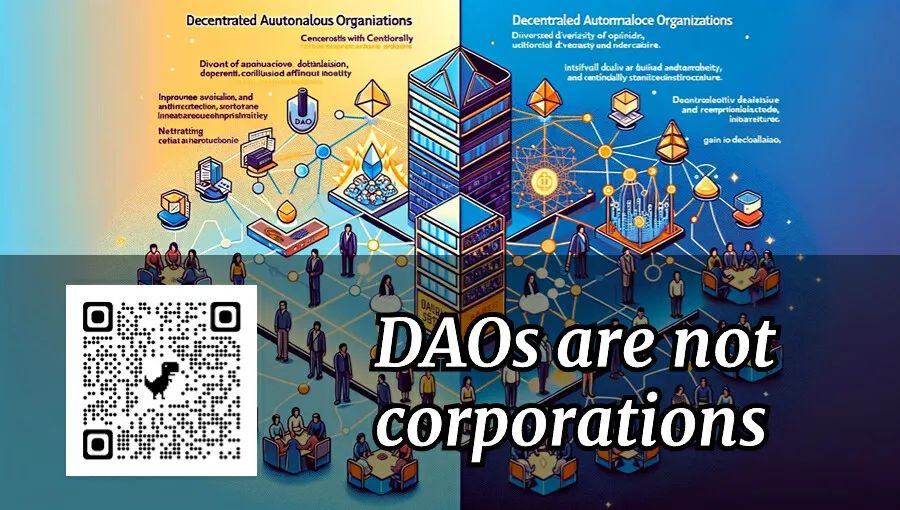
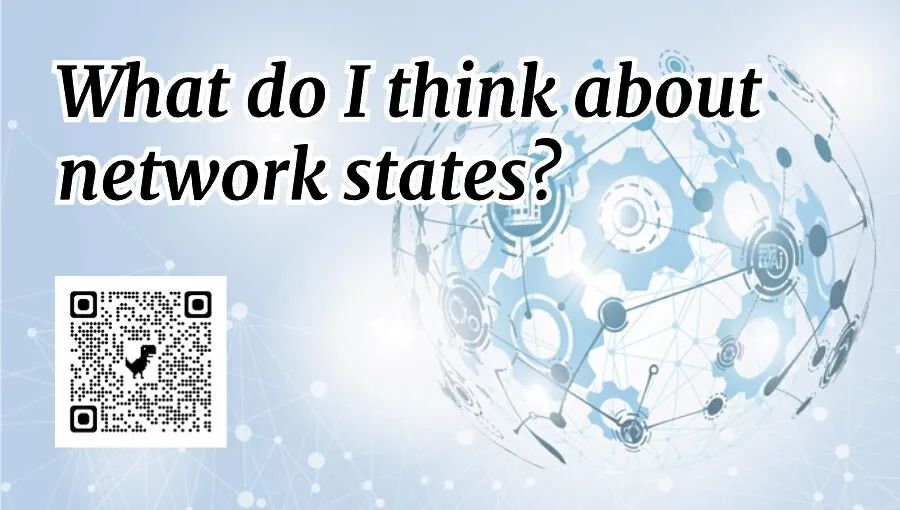
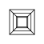

Vitalik 共读 002 期SeeDAO × PlanckerDAO有人说，比特币是漂浮在公海上、为对抗中心化金融而生的诺亚方舟。而以太坊等其他公链，正在这片公海上建设一个小世界。在现实世界中，随着加密货币经济体的发展，越来越多的加密朋克也在思考如何在社会层面再来一波颠覆式创新。DAO、Crypto City、Network State 等思潮正在催生一系列实践。 我们计划在 12.14 - 1.11 为期4周的时间，共读 3 篇 Vitalik 的英文博文。在提升英文水平的同时，加深 web3 在社会实践的中的理解。 共学主题Week 1Coordination, Good and Bad如何构建一套协作机制，让成千上万人基于共识自由联合？比特币做到了，以太坊做到了，是否还可以进一步拓展？想想这些问题：
博弈论、去中心化机制是否能帮我们创造更好的协作环境？
面对共谋 51%攻击为例的一系列攻击，协作机制该如何预防？
当攻击成功，我们是否能用分叉等工具重塑共识？
本文将为你揭晓。
Week 2DAOs are not corporationswhere decentralization in autonomous organizations matters Vitalik 在文中提到：近期有很多讨论，提出高度去中心化的 DAO 过于低效，反倒是用公司更为靠谱。但实际上 DAO 有自己独特的应用场景，包括不限于：
当意见的多样性红利，能够带来更好决策时
当组织的存在，需要直面与利维坦的冲突时
当中立、稳定、公平的特质比效率更重要时（特别是基建）
DAO 将会比公司更值得信赖除此之外，还有怎样的可能？Week 3What do I think about network states?“地球上最强大的力量是什么？在 19 世纪是上帝；在 20 世纪是美国军队；而到了 21 世纪中期则是加密技术。正如阿桑奇所说，再多的暴力也无法解决特定的数学问题。因此你有多少核武器并不重要，如果财产或信息是由加密技术保证的，那么国家在没有解出那些方程之前就无法褫夺这些财产与信息。”而我们是否有机会基于这种底层技术，建立不被美国政府与舆论操控所支配的新型共同体？2022年7月，在 Balaji 终于写出了备受期待已久的《Network State》一书中，正在对于这种人类新型共同体进行定于与构想。同月，Vitalik 发表了这份长篇论述，并进一步展开展开探讨：
什么是 Network States ？
Balaji 提出的网络国家，有怎样的历史案例？
Crypto 与 Network States 有什么关系？
我喜欢 Balaji 愿景的哪些方面？有哪些异议？
其他类型的 Network States 有怎样的可能？
是否存在中间道路？
共学方式1、【输入】自行阅读英文原文 2、【内化】在群中交流，并在 12.23、1.6 参加 Plancker DAO 小V栏目主办的“小V共读会"，与大家一起探讨心得体会3、【输出】整理共学笔记，将学到的东西为己所用4、【行动】围绕共学中产生的灵感，发起新的提案&项目于
小V读书会
小 V 栏目是一个跨社区常设栏目，旨在收集 Vitalik 参与编写的文章、EIP、访谈、演讲视频，进行产品、技术相关的讨论和翻译、研读、传播。